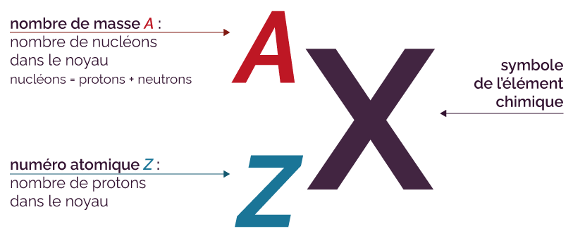
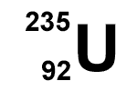
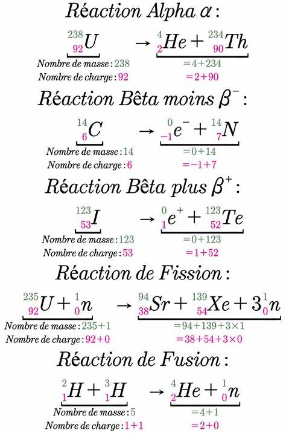
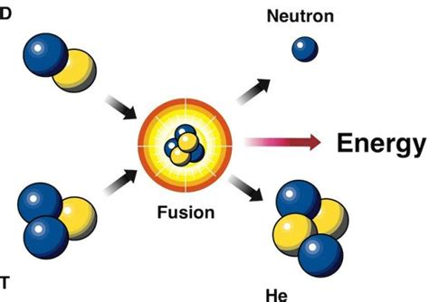
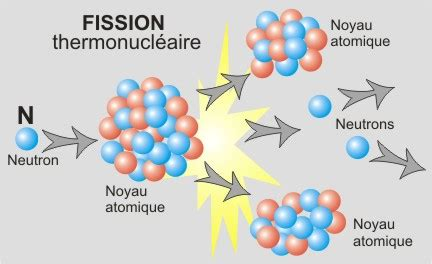

partie 1: L'atome du nucléaire
Dans cette première partie, nous allons nous intéresser à (comme son nom l'indique) l'atome du nucléaire. Nous vous avons sélectionné quelques isotopes du nucléaire, ainsi que son écriture symbolique, les réactions nucléaires avec les termes de fission et fusion et l'origine de l'énergie nucléaire...
I)Commençons par les isotopes du nucléaire:
Des isotopes ont des numéros atomiques Z identiques(même nombre de protons) mais des nombres de masse A différents(nombre de neutrons différents). Ils appartiennent au même élément chimique. 
Nous vous en avons donc séléctionnés quelques uns:
l'uranium-234; noté:.jpg)
l'uranium-235; noté:
l'uranium-238; noté:.gif)
II)l'écriture symbolique d’une réaction nucléaire:
Une transformation nucléaire est modélisée par une équation dans laquelle apparaissent les écritures conventionnelles des noyaux et/ ou des particules libres. Lors d'une transformation nucléaire, les nucléons de noyaux atomiques ou de particules libres(particule seule) se réarrangent pour former de nouveaux noyaux atomiques ou particules libres.
Dans une transformation nucléaire, il y a conservation du nombre de nucléons(A) et conservation de la charge électrique(Z)
.jpg)
III)
Les termes de fusion et fission:
la fission et la fusion sont des transformations nucléaires qui libèrent de l'énergie: ce sont des transformations exothermiques.
La fusion:
Une fusion nucléaire nucléaire est une transformation nucléaire au cours de laqulle deux noyaux atomiques légers s'assembent pour former un noyau plus lourd.L'énergie libérée par la fusion au coeur des étoiles est convertie en énergie lumineuse.
La fission:
Une fission nucléaire est une transformation nucléaire au cours de laquelle un noyau atomique lourd est fragmenté en noyaux atomiques plus légers. L'énergie libérée par la fission est convertie en énergie électrique dans les centrales nucléaires.
les réactions de fission et de fusion nucléaires s’accompagnent d’une libération d’énergie sous forme : d’énergie cinétique des noyaux et des particules créés et d’énergie de rayonnement.
IV)L'origine de l'énergie nucléaire:
L'énergie nucléaire dépend d'un combustible fissile, l'uranium, dont le minerai est contenu dans le sous-sol de la Terre. Elle permet de produire de l'électricité, dans les centrales nucléaires(voir schéma d'une centrale nucléaire et son schéma sur la page suivante), appelées centrales électronucléaires, grâce à la chaleur dégagée par la fission d'atomes d'uranium
V)Le noyau et la libération d’énergie:
L’énergie nucléaire est une forme d’énergie libérée par le noyau(cœur des atomes) composé de protons et de neutrons. Elle peut être produite de deux manières, par la fission(voir schéma au-dessus) - division du noyau de l’atome en plusieurs parties - ou par la fusion(voir schéma au-dessus) de plusieurs noyaux.Il existe plusieurs énergies libres: la chaleur, l’électricité et le rayonnement.A chaque réaction, de l’énergie se libère sous forme de chaleur et de rayonnement. La chaleur peut être convertie en électricité dans une centrale nucléaire, tout comme la chaleur obtenue en brûlant des combustibles fossiles tels que le charbon, le gaz et le pétrole.